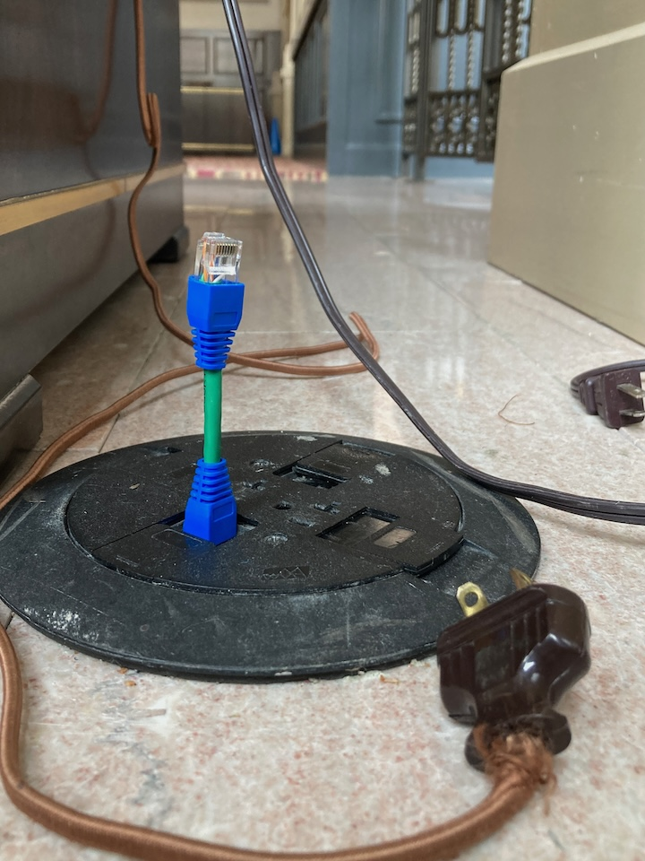
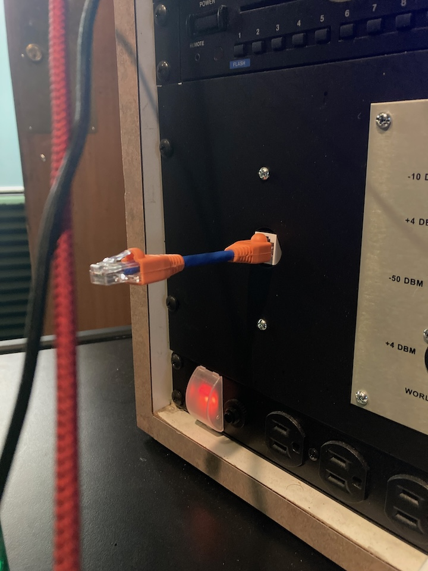
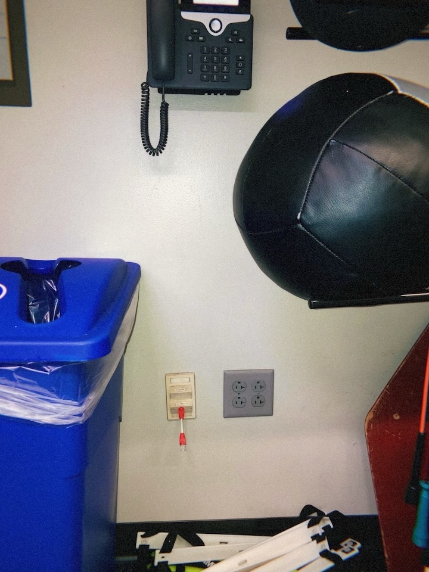
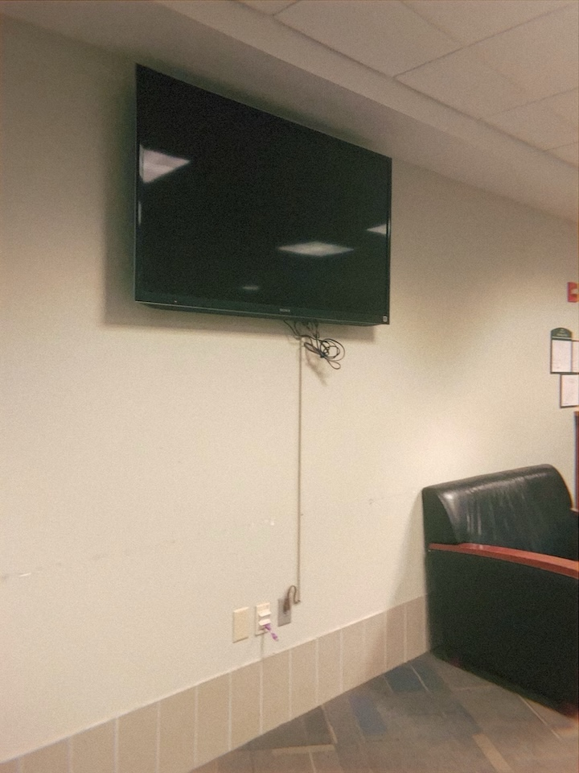
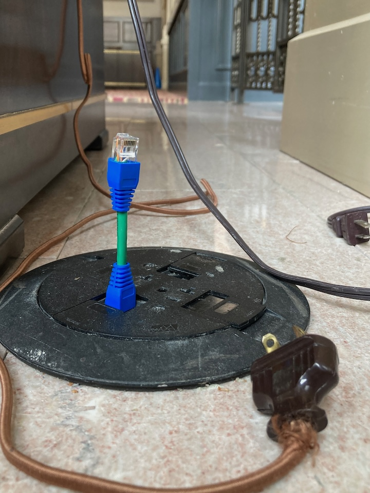
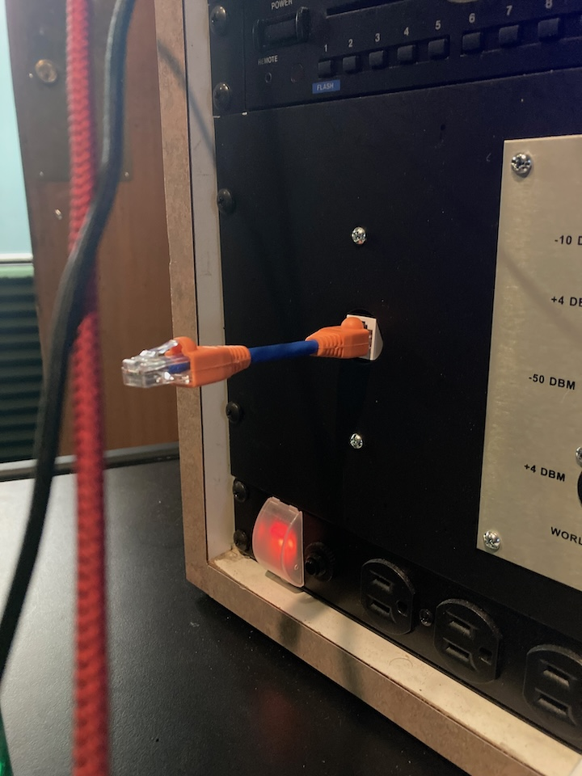
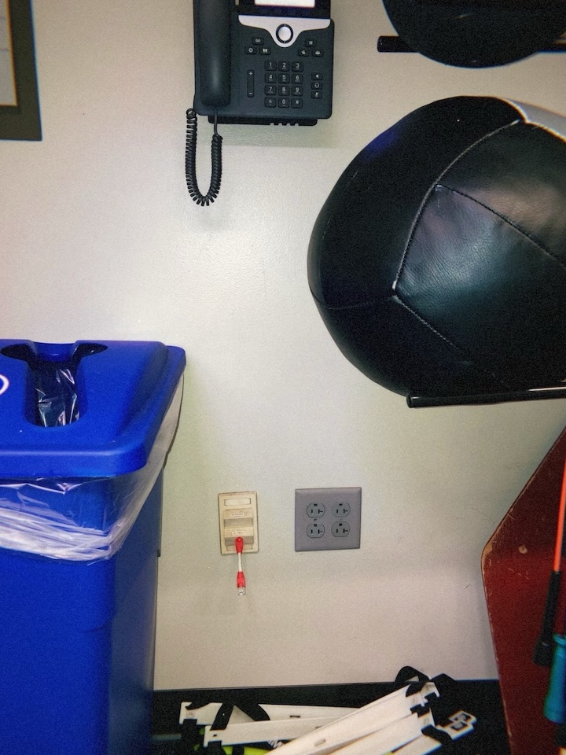
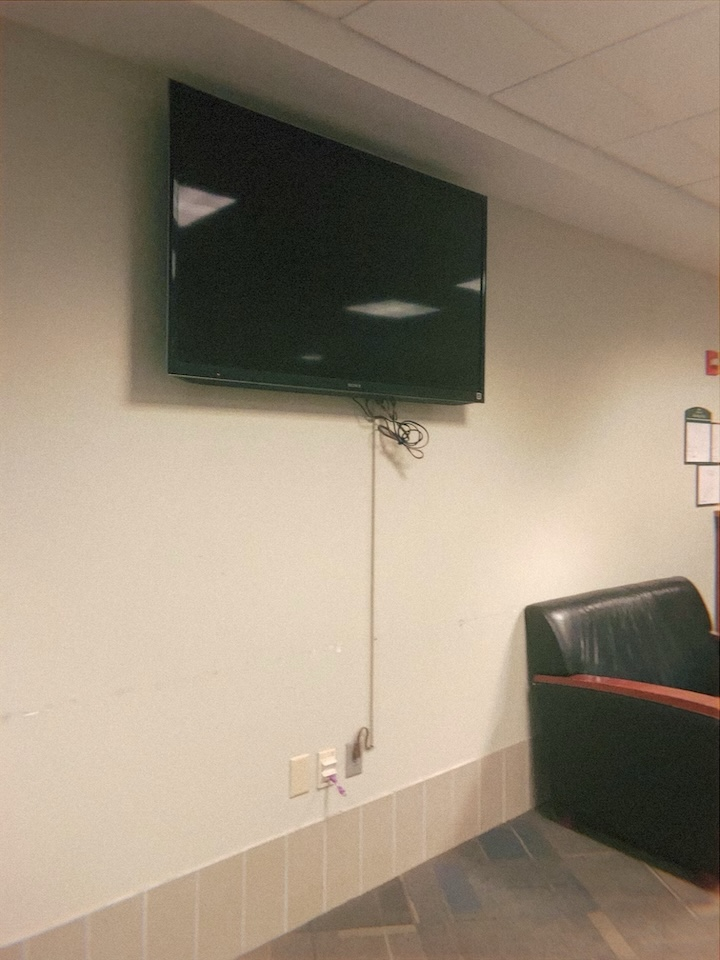

4 1/4 in. Petite UTP Convertible Cables, 2024
Year: 2024
Made with: CAT6 Ethernet cable and boot caps.
Petite UTP Convertible Cables are a new type of Ethernet cable.
Most ethernet cables are long - petite UTP's are short. Who cares?
Shorter cable = Faster speeds.
Petite UTP cables are fully functional and you can do whatever you like with them.
I like to place them in vacant ethernet ports.
 






